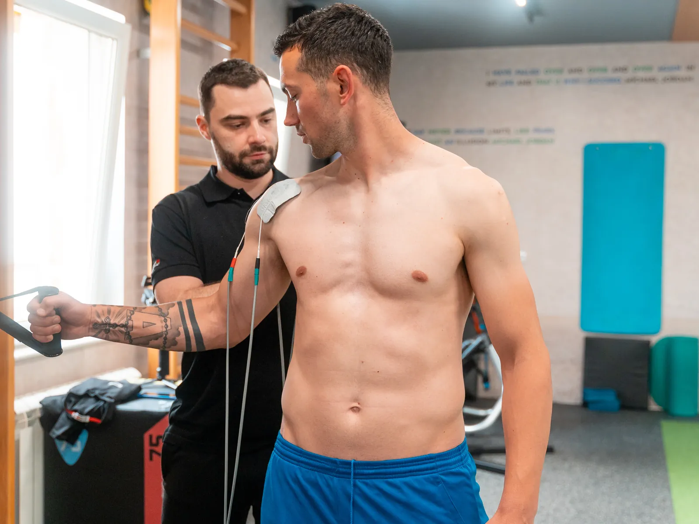
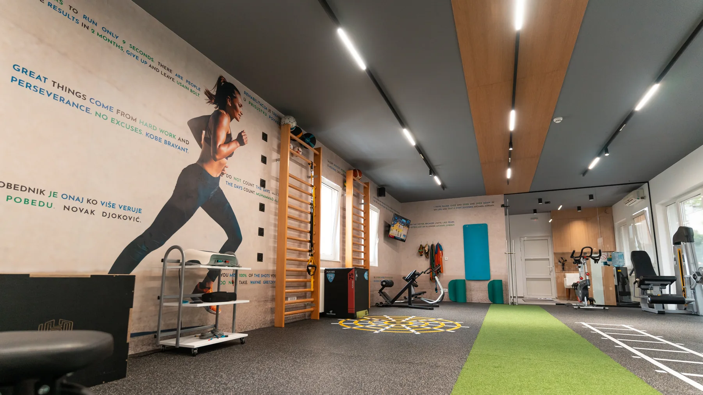

DNS
Dinamička neuromuskularna stabilizacija. Polazi od obrazaca koje telo uči u prvoj godini života, od prevrtanja do hoda, i kroz kontrolu trupa vraća zglobove u položaj u kome mogu da rade bez preopterećenja.
USLUGA 03 · POKRET KAO DEO TERAPIJE
Individualno vođene vežbe koje vraćaju obim pokreta i kontrolu. Da se bol ne vrati čim terapija stane.

■ ŠTA JE OVO
Terapija spusti bol. Ono što ga drži dole je pokret. Ako se posle smirivanja ništa ne promeni u načinu na koji se krećete, vraća se isti bol iz istog razloga.
Kineziterapija nije trening u teretani sa lakšim tegovima. Vežbe se biraju prema nalazu, doziraju prema fazi oporavka i rade jedan na jedan, sa ispravkom u toku pokreta, jer pogrešno izvedena vežba ume da napravi novi problem.
Cilj nije da izdržite termin. Cilj je da pokret koji vas je bolio ponovo bude siguran, i pod opterećenjem.
Bol je popustio, ali pokret još nije siguran.
Ako je bol akutan, prvo ide fizikalna terapija, pa vežbe. Kod tegoba koje traju mesecima je često obrnuto, jer mirovanje pogoršava. Nalaz presuđuje redosled.

Pre prve vežbe se meri odakle se kreće: obim pokreta, snaga, stabilnost. Bez polazne mere se kasnije ne zna da li je napredak stvaran ili se samo tako čini.
Vežbe se biraju prema nalazu i prema tome čime se bavite. Isti nalaz kod trkača i kod nekoga ko sedi osam sati ne daje isti program.
Terapeut je uz vas ceo termin i ispravlja izvođenje dok traje pokret. Broj ponavljanja nije poenta. Tačnost jeste.
Opterećenje raste tek kada telo pokaže da može. Kraj rada nije poslednji termin, nego trenutak kada vam terapeut više ne treba za isti pokret.
Dinamička neuromuskularna stabilizacija. Polazi od obrazaca koje telo uči u prvoj godini života, od prevrtanja do hoda, i kroz kontrolu trupa vraća zglobove u položaj u kome mogu da rade bez preopterećenja.
Proprioceptivna neuromuskularna facilitacija. Vežbe idu u dijagonalama, uz otpor i istezanje, i uče nervni sistem da mišiće uključi pravim redom. Koristi se u svim fazama rehabilitacije.
Vežbe za loše držanje, skoliozu, kifozu i lordozu. Preventivno, dok deformiteta još nema, ili terapijski, da se postojeći ne pogoršava. Isključivo individualno.
Dinamičko pre napora, statičko posle njega, i terapijsko kada je mišić napet a sporta nema. Nije zagrevanje pred trening nego zaseban deo plana.
Uz fizikalnu i manualnu terapiju, vežbe rade na onome što je do hernije dovelo: držanju, slabim stabilizatorima i načinu na koji se telo saginje i podiže teret.
Metod se ne bira po imenu nego po tome šta testovi pokažu. Vaš deo je da dođete i opišete tegobu.

Prvi termini idu sporije nego što očekujete, jer najviše vremena odlazi na ispravljanje izvođenja. Opterećenje raste tek kada je pokret tačan, jer vežba urađena naopako ne vraća funkciju nego pravi novu tegobu.
Ne mora sve da počne ovde.
Ako niste sigurni kuda, počnite od dijagnostike. Pregled i postoji da se usluga ne pogađa.
Cene su preuzete sa lokomoto.rs/cenovnik-2/, gde se grupa vodi kao „Rehab trening / Kineziterapija". Trajanje termina (60 i 60+ min) uzeto je iz cenovnika, jer je panel na naslovnoj govorio drugo (45–60 min). TRAJANJE ZA POTVRDU
Zavisi od toga šta boli i zašto. Ako je bol akutan, prvo ide fizikalna terapija, pa vežbe. Kod hroničnih tegoba je često obrnuto, jer mirovanje pogoršava. Nalaz presuđuje.
Terapija koja koristi vežbu kao sredstvo. Izgleda kao trening, ali se doziranje bira prema nalazu i fazi oporavka, a ne prema tome koliko možete da izdržite tog dana.
Da, ali tek kada se izvođenje ustali, da se kod kuće ne ponavlja greška. ZA POTVRDU
Da. Korektivna gimnastika je namenjena pre svega deci u razvoju: loše držanje, skolioza, kifoza, lordoza. Radi se individualno, ne u grupi.